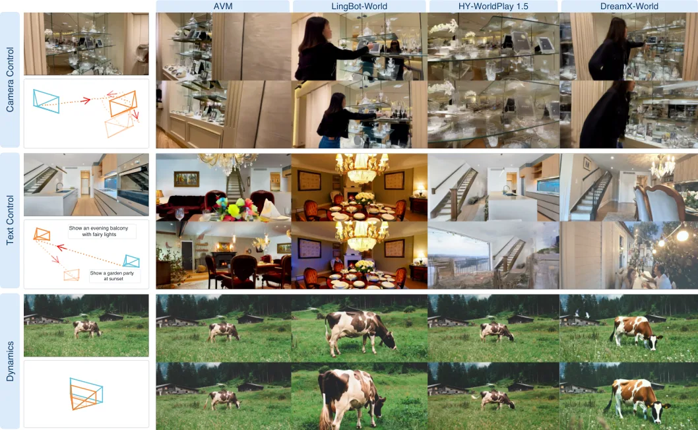
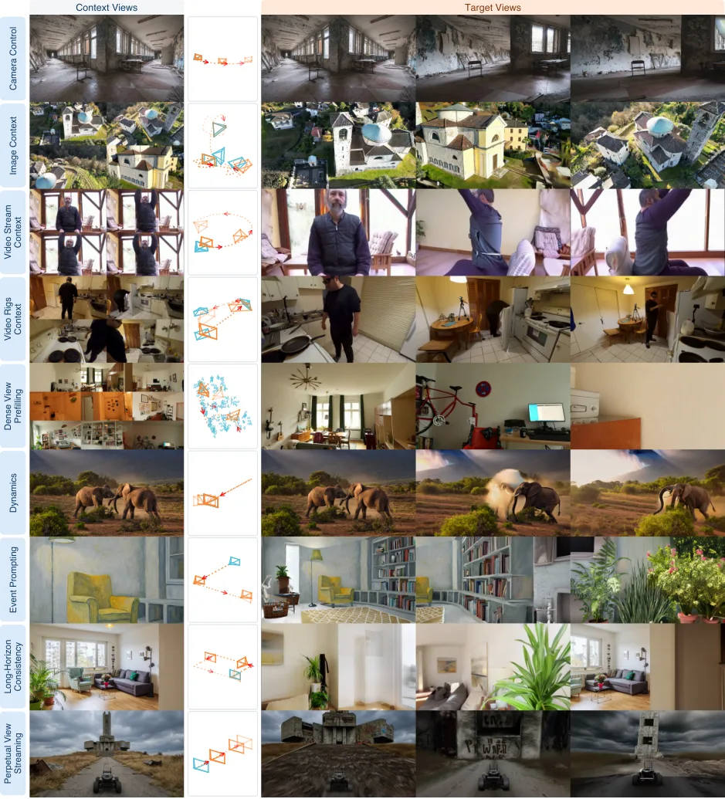
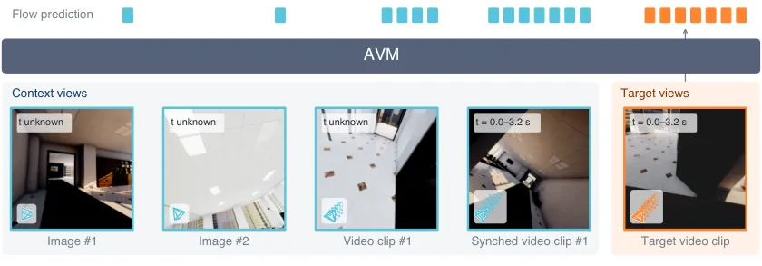
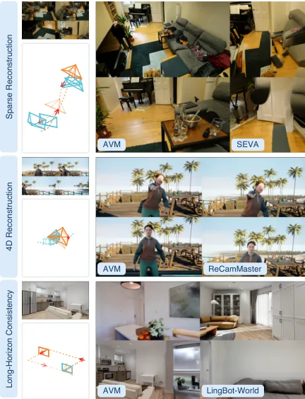
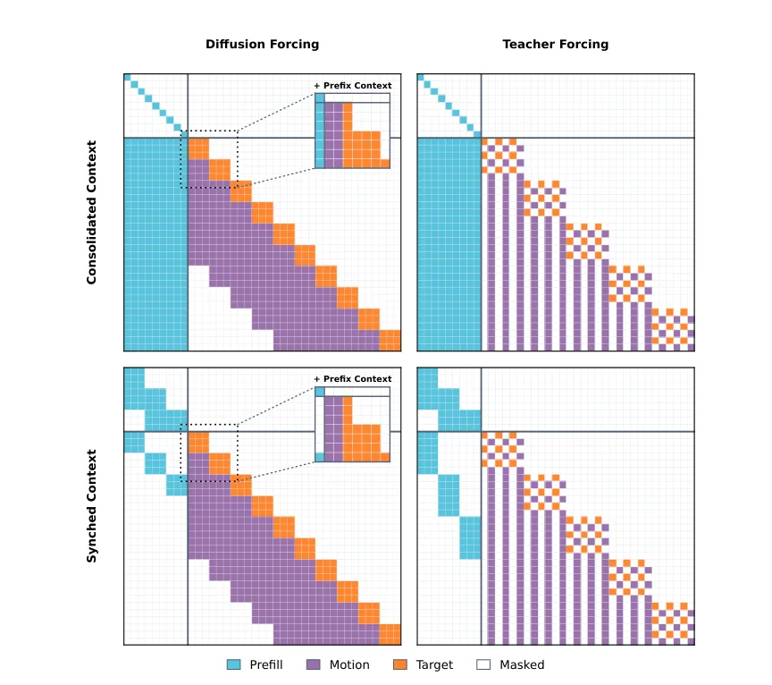

自回归视角模型：把场景生成成一条视角流，而不建 3D 表征
Autoregressive View Model
一句话：不建 3D，用“有界 in-context 池 + 位姿检索”把长视频生成的回访一致性做到 28.04 dB；值得借鉴的是检索式上下文与位姿条件注入，而不是把它当几何后端。
camera control
revisit PSNR
4D PSNR
no retrieval
作者、单位与技术谱系 · Research context
作者与单位
研究脉络
- Stable Virtual Camera (SEVA)方法基座关系：同一第一作者的相机可控生成式视角合成，AVM 把双向扩散的视角生成扩展成自回归的 in-context 视角流[AVM 参考文献]
- Diffusion Forcing / Self-Forcing / MAGI-1方法基座关系：因果视频生成的训练与蒸馏路线，AVM 的 off-policy TF+DF 初始化与 on-policy DMD 蒸馏沿用这一组方法[AVM 第 3.3 节]
- GEN3C / ReCamMaster对比基线关系：相机控制生成式渲染的任务定义与评测口径，AVM 在其上增加长程历史检索与回访一致性[AVM Table 1–4]
合作网络
- Jensen (Jinghao) Zhou — University of OxfordJensen (Jinghao) Zhou → University of Oxford关系：署名单位[arXiv 署名页]
- SEVA 共同署名Jensen Zhou / Christian Rupprecht / Philip Torr → SEVA (Stable Virtual Camera)关系：共同署名（前作）[AVM 参考文献 [106]]
- Meta 生成式 3D 线Peter Kontschieder → Generative Gaussian Splatting (ICCV 2025)关系：共同署名（同团队前作）[AVM 参考文献 [65]]
作者单位与共同署名来自 arXiv 署名页和论文参考文献；技术接续是根据同一作者、同一任务与引用关系做出的解读，论文没有声明导师、师生或实验室隶属关系。
方法本质拆解 · What actually changed
是微调，不是从头训练
以 14B 预训练 image-to-video DiT 为初始化，在约 6M 有标注场景 + 约 2M 无标注视频 clip 上做 flow-matching 微调，随后做因果 off-policy 初始化与 on-policy 蒸馏，注意力、投影和条件嵌入的权重全部改变。VAE 与 T5 文本编码器保持冻结，训练用 5 秒 clip、448×448 起步再升到 720×1280 的分辨率课程。
条件只有位姿、时间戳和上下文掩码
约束项是 metric-scale 的相机位姿（平移 RoPE、旋转 ray APE）、时间戳 SinPE，以及标记哪些 slot 是 context 的二进制掩码；损失为 flow matching、ERFT 误差回灌、DMD 蒸馏与对抗损失。没有深度、法向、多视图重投影或尺度监督，3D 一致性完全依赖数据先验与上下文条件，这一点决定了它不能替代几何后端。
自回归分块 + KV cache，没有全局优化
base 模型每块用 2 个 motion latent 帧条件 19 个目标帧、50 步 Euler + CFG；因果模型用 15+3 的窗口、4 步 DDPM，并复用 sink/retrieved/motion 的 KV 状态，检索到的 KV 可 offload 到 CPU。推理时不做 bundle adjustment、不建因子图、也不在线拟合任何 3D 表征，唯一跨块机制就是上下文检索与 KV 复用。
把长程一致性交给检索，而不是 3D 存储
它改变的是“谁保证回访一致”：输入视图与生成历史进入同一个有界 in-context 池，按位姿把旧视角重新送回注意力，sink 视图锚定风格与内容，motion 窗口保证时间连续。没有做的是几何校验与尺度恢复，因此位姿漂移、错误外参或尺度不一致不会被任何后端纠正，只能靠数据先验吸收。
输入 posed images/videos + 目标相机轨迹 → 在 14B 视频 DiT 的注意力里用 RoPE/ray 位姿条件与位姿检索组织有界上下文 → 自回归流式生成短 clip → 不建 3D 表征却把回访 PSNR 从 12.29 提到 28.04。

结论与问题Conclusion & Motivation
核心结论
AVM 把场景当成一段可续写的“视角流”，用一个 14B 视频扩散 transformer 按请求的相机轨迹生成短 clip，全程不拟合 NeRF、3DGS 或任何显式 3D 表征。在 DL3DV-Benchmark 与 WorldScore 上，相机控制得分 70.67，最佳开源世界模型只有 3.91；回访一致性 PSNR 28.04，最佳基线 DreamX-World 为 12.29。稀疏重建（7 张 posed image）PSNR 24.14 略高于 SEVA 的 23.91，4D 重建（多机位同步视频）PSNR 21.16 远高于 ReCamMaster 的 13.53。代价很清楚：文本对齐 39.65 低于最佳基线 54.07，动态度 24.88 低于 35.55，说明它保住了几何与外观，却没保住提示词遵循和运动幅度。
动机与问题
现有两条路线各有硬约束：NeRF/3DGS 需要稠密采集和逐场景拟合，视频生成器能外推未见区域但轨迹一长就漂移。更具体的问题是上下文窗口——当真值输入和生成历史加起来超过模型一次能条件化的视图数时，早期视角就被挤出去了，回访同一地点时无法与历史对齐。作者要的是同一个 in-context 接口在单图、多图、同步视频流和自己生成的历史之间自由切换，而不是为每种输入输出组合训练不同模型。
方法Method
方法总览
训练分三段。第一段在预训练 image-to-video DiT 上做 N-in-1-out 的 flow-matching 微调：N 个 context slot 条件 1 个目标 clip，context 与 target 在同一序列里做全注意力。第二段做因果初始化，混合 teacher forcing 与 diffusion forcing，让模型见过“带噪历史”。第三段在模型自己的 rollout 上做 on-policy 蒸馏（DMD + 对抗损失），把采样压到 4 步并支持 KV cache 复用。推理时上下文由三部分组成：sink 视图（保留输入风格与内容）、按位姿或时间戳检索到的历史视图、以及最近的运动窗口；总长度有界，因此输入再密、历史再长也不会撑爆注意力。
关键技术细节
相机条件直接在 metric-scale 原始世界坐标里做：平移用 RoPE 加到 self-attention 的 query/key 上，作者的理由是大绝对坐标下 RoPE 仍处于训练分布内；旋转用像素对齐 camera ray 推出的 APE 加到 patch embedding，保留朝向线索；时间戳用 SinPE，静态场景固定、动态场景单调递增。每个 slot 的输入是 [noisy latent ‖ reference latent ‖ context mask]，共 2C+1 通道。检索按位姿取空间相邻视图并把 temporal index 归 0，或按时间戳取同步视图并保留目标时间索引。训练还加了 ERFT：把模型自身的 flow 误差按 timestep 分桶存起来，之后回灌到 noisy latent 和 context reference，概率 0.5 不加重放。

实验Experiments
实验设置
生成能力用四组设置：DL3DV-Benchmark 全部 141 个场景取每条轨迹前 81 帧；WorldScore static split 的 26 个场景跑 721 帧平移+旋转轨迹；另取 20 个场景的 241 帧三段 prompt 测文本与物体控制；WorldScore dynamic split 32 个场景、固定相机 81 帧测动态。场景持久性用三组：同一 141 场景取 7 张 posed image 做稀疏重建；MultiCam 24 个 held-out 场景以 camera 01 视频为输入、评分 camera 02 的 81 帧同步画面；26 个场景的 721 帧 loop-closure 轨迹测回访。指标覆盖 camera control、Rot./Trans. 误差、FID、VMAF、DreamSim、PSNR/SSIM/LPIPS、VPR、SuperPoint matching 和 WorldScore 3D consistency；对照为 GEN3C、Gen3R、SEVA、ReCamMaster 与 LingBot-World、HY-WorldPlay 1.5、DreamX-World。
实验数字与比较
相机控制：WorldScore Ws split 70.67，最佳世界模型 3.91；DL3DV 96.48，与 SEVA 的 97.07 基本持平（Table 2）。视觉质量：DL3DV 全局 FID 18.69，次优 25.04（Table 2）。稀疏重建：PSNR 24.14 / SSIM 0.769 / LPIPS 0.100，SEVA 为 23.91 / 0.754 / 0.106，几何匹配 SP 0.83 对 0.75（Table 3）。4D 重建：PSNR 21.16 对 ReCamMaster 13.53，3D Cons. 64.03 对 57.55（Table 4）。回访：PSNR 28.04 / SSIM 0.836，DreamX-World 12.29 / 0.409，VPR 0.92 对 0.40（Table 5）。反例也有：文本对齐 39.65 对 54.07，动态 24.88 对 35.55，均低于世界模型基线。
消融/失败边界
检索是长程一致性的开关：把 L_rtr 设为 0，回访 PSNR 从 28.04 掉到 11.13（Table 6）。窗口长度不是关键：把 L_win 从 21 降到 15，回访 28.04→28.00，稀疏重建 24.14→23.98，说明收益来自“检索到旧视角”而不是更长的局部窗口。on-policy 调也是必需的：仅做因果初始化时回访 PSNR 只有 10.12、FID 34.86，on-policy 后回到 28.04 / 18.69。per-sample CFG 蒸馏提升相机控制（96.48 对 93.12）和稀疏重建（24.14 对 22.30），代价是 FID 18.34、动态度 67.21，反而略优于保留蒸馏时的 18.69 与 66.36，作者把它明确写成引导强度与真实感之间的取舍。失败边界在于没有几何校验：生成内容可以与输入在像素上一致，却在尺度或结构上错误，而系统没有任何后端能发现。
局限与迁移Limitations & Transfer
局限与待核验
作者明确承认两点：文本对齐与动态度仍是弱项，garden-party 提示词仍会生成室内房间，奶牛视频只保留细微姿态变化。另一条隐含限制是它不构造显式 3D 表征，因此无法直接输出尺度正确的点云、深度或位姿，也没有报告任何几何精度指标。我们的待核验项：论文正文没有给出推理延迟、吞吐或显存占用，4 步采样 + KV cache 能否达到交互帧率无法从原文确认；训练侧只给了约 8M 场景/clip 的规模，没有 GPU 小时或成本；回访评测依赖 loop-closure 轨迹，对真实探索式轨迹（没有回到原位）是否同样有效尚未验证。
与你研究路线的关系
第一个可迁移模块是“有界上下文 + 位姿检索”：它把长序列一致性从全局优化换成了按几何邻近检索历史帧，这对我们做长距离建图或大场景回环是一个可测试的近似——代价是没有全局约束，收益是显存与延迟可控。第二个是条件注入方式：把相机平移写成 RoPE、旋转写成 ray APE，等价于把外参与重力方向编码进注意力坐标，这正是我们给前馈重建加入 IMU/外参先验时可以复用的形式。下一步最小实验：在我们自己的室内序列上用 Pi3/VGGT 出位姿，比较“全历史窗口”与“位姿 top-k 检索”两种上下文策略，在回访 PSNR、VPR 和峰值显存上的差异。







